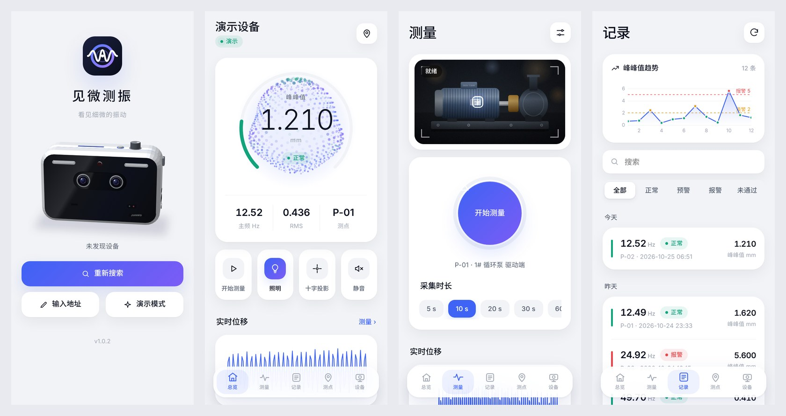
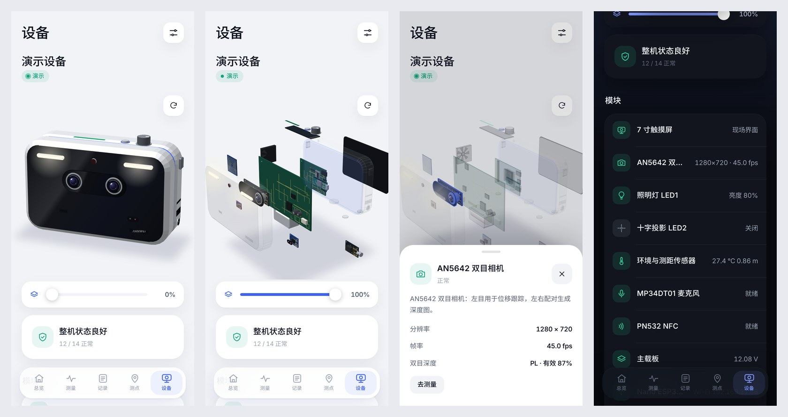

见微测振 手机 APP（2026-10-25）
配套见微视觉测振仪的 APP（Android、iOS、Windows 三个版本共用同一套界面），以及为它新增的设备侧接口：AX7010 局域网 API 和 Nano ESP32 Wi-Fi 网关。
- Android：dist/JianweiVibro-1.0.5.apk（约 940 KB，Android 7.0 及以上，v2 签名；1.0.x 同一签名，可直接覆盖安装）
- Windows：dist/JianweiVibro-1.0.5-windows-x64.zip（约 870 KB，Windows 10/11 x64，解压后运行 JianweiVibro.exe，需系统自带的 Edge WebView2 运行时）
- iOS：dist/JianweiVibro-1.0.5-ios-unsigned.ipa（约 1.1 MB，iOS 14 及以上），由 GitHub Actions 在 macOS 上编译后提交（见 §5.3）。未签名，需用自己的 Apple ID 通过 Sideloadly / AltStore 等工具重签安装，或在 Mac 上用 Xcode 打开 ios/ 工程直接装到手机
- 截图：截图，用演示模式在 390×844 手机视口中渲染


1. 功能
| 页面 | 内容 |
|---|---|
| 连接 | 3D 产品模型首屏；UDP 广播搜索设备，同时探测网关固定地址 192.168.4.1 和最近用过的设备；可手动输入地址；演示模式不需要硬件 |
| 总览 | 动态粒子球与环形表：粒子沿球面传播的波纹随主频变化，颜色随判级变化；中心显示峰峰值、判级、主频、RMS 和测点。还有四个快捷键（测量、照明、十字投影、静音）、实时位移曲线、环境数据（温湿度、测距、功率）、最近记录，报警与预警横幅可一键确认 |
| 测量 | 相机实时画面（局域网直连）带取景框和测量框，点按画面即可移动测量框；开始/结束按钮带进度环；采集时长 5–60 s；照明亮度与十字投影开关；实时位移曲线可触摸读数；多点测振的停机基线采集；上次结果卡片 |
| 记录 | 峰峰值趋势（标出预警/报警线），可搜索，按判级筛选，按日分组。详情页有时域波形、频谱（标注峰值）和 3D 时频瀑布图（由波形做短时 FFT，可拖动旋转），还有质量指标、采集条件，以及打印报告、导出 CSV/JSON 到「下载」、分享摘要 |
| 测点 | 当前测点（NFC 或手动切换），按判级统计；测点列表带趋势小图；测点详情含峰峰值趋势、主频变化和历史记录，可一键设为当前测点并开始测量 |
| 设备 | 3D 数字孪生：可旋转（带惯性）、双指缩放；滑动条无级调节爆炸程度，外壳先打开，内部各层依次飞出；点击任一部件高亮并显示实时状态与操作。14 个模块：触摸屏、AX7010、主载板、双目相机、照明、十字投影、ESP32、NFC、传感器、麦克风、前面板、打印机、电源、风扇；指示灯条按判级变色，风扇运行时叶片转动，屏幕显示实时波形。另有模块列表、系统数据、测量与报警设置、网络与 Wi-Fi（网关扫描、热点开关与密码）、用手机时间校准设备时钟、测试提示音、切换设备、安全关机 |
| 设置 | 采集时长、测量方向、报警阈值、蜂鸣器、自动照明与亮度、测量时关闭投影、语音与音量、状态灯亮度、风扇模式；外观浅色（默认）/ 深色 / 跟随系统；自动校准设备时间 |
| 关于 | 版本、隐私政策、用户协议 |
交互：底部标签栏指示器随切换滑动；左右滑动切换标签页，页面跟手移动；详情页从左边缘右滑返回；Android 返回键先关闭弹层或详情页。新结果出现时会提示，预警/报警时手机振动、记录标签显示红点；采集期间屏幕保持常亮。
设计：浅色为默认的瓷白中性色，配钴蓝到紫的单一强调色，卡片用柔和阴影而不加描边。字体为内置的 Inter（数字与西文，等宽数字）和 Noto Sans SC 子集（400/500/700，只含 APP 用到的约 540 个汉字，共约 210 KB，其他字符回落到系统字体），两者均为 SIL OFL 1.1 许可。3D 效果全部用 Canvas 2D 自绘，不依赖 WebGL 或第三方库，可离线运行。
2. 连接方式
| 方式 | 适用 | 功能 |
|---|---|---|
| 局域网直连 AX7010 | 设备网口与手机接同一路由器 | 全部功能：实时画面、实时波形、完整记录与原始文件、移动测量框、为 Nano 配网 |
| ESP32 Wi-Fi 网关 | 现场无路由器：手机连设备热点 VIBMON-xxxx（默认密码 vibmon2026，地址 192.168.4.1）；ESP32 也可同时连现场 Wi-Fi | 状态、启停测量、照明/投影/静音、测点、设置、最近 6–8 条记录与最新一次曲线（每条约 48 点）、网关自身的 Wi-Fi 配置；不含相机画面和原始文件 |
按用户要求，设备与 APP 仅供私下使用，不考虑公网攻击者。默认不配对，同一网络内直接连接；如需要，可在 vibmond 设置 app_api.require_pairing=true，此时 APP 请求配对码，设备屏幕显示 6 位码（120 s 有效，连错 5 次作废），APP 输入后获得令牌，令牌保存在 app_tokens.json。
3. 接口（API v1）
两种连接使用同一套 JSON 接口，前缀 /api/v1/，响应为 {"ok":true,"data":…} 或 {"ok":false,"error":"…"}，并带 CORS 头。
| 方法 路径 | AX7010（端口 8080） | 网关（端口 80） |
|---|---|---|
| GET info | 设备号、名称、版本、端口、是否需配对 | 同左，另含 ax_online |
| GET live | 精简实时状态（与网关同一结构，见下），附最近 300 个位移采样 wave（像素，乘 mmpx 为毫米） | AX 每 2 s 或状态变化时推送的快照，另含 gw.age_ms、gw.ax_online（快照超过 8 s 视为离线） |
| GET status / settings / points | 完整 status、设置、NFC 测点表 | live 快照、设置、测点 |
POST command {"cmd":…} | 同步执行，白名单：measure_start、baseline_start、measure_stop、light、laser、mute、set_point、print、voice、set、rtc_set、zoom_reset、status、settings、roi、nano_status、set_net、shutdown、stereo_distance | 返回 202 {"cid"}，经 APP_COMMAND 事件转给 AX；用 GET command/<cid> 轮询结果（15 s 超时）。白名单同左，但不含 status、settings、roi、nano_status、set_net、stereo_distance |
| GET records、records/<id> | 记录列表；详情为 record.json＋抽稀后的波形（保留包络）与频谱（保留峰值），默认 ≤2000 点 | 最近记录；仅最新一次测量有曲线（partial:true） |
| GET records/<id>/files/<name> | 原始 record.json / waveform.csv / spectrum.csv / acoustic.wav | — |
| GET preview.bmp?w= | 相机预览（24 位 BMP，≤640 宽） | — |
| GET/POST net、GET net/scan | — | 站点与热点状态；连 Wi-Fi {ssid,password}、热点 {ap_enabled,ap_password}；异步扫描 |
| POST pair/request、pair、unpair | 仅 require_pairing 时使用 | — |
设备发现：向 UDP 48300 端口发送 VIBMON_DISCOVER，AX 与网关各自单播回复 info 的 JSON。网关另有 mDNS vibmon-xxxx.local（服务 _vibmon._tcp）。
mute 命令带 {"on":false} 时取消静音（不带参数或 on 为 true 时静音并确认报警，屏幕 K1 不变）。
live 字段：dev ver ms el dur cam method bl roi[cx,cy,w,h] cal unit lv mute light{on,pct,ok} laser pt{id,name,uid} pwr{v,a,w,warn,pf} tc rh dist tach fan prn msg tv utc nano{on,wifi,ip,sd,nfc} st{on,be,vf} ac set{dur,warn,alarm,axis} last{id,ok,why,u,hz,clr,amp,pp,rms,lv,saved,ac_hz} fps fw fh mp{win,hz}；不含 wave 时不超过 900 字节，可装入一帧协议。
协议 V1.1 扩展（PS↔Nano，shared/vibproto）
| 方向 | 操作码 / 事件 | 载荷 | ||||
|---|---|---|---|---|---|---|
| AX→Nano 请求 | PUBLISH 0x60 | `{"topic":"status" | "settings" | "points" | "records" | "curves","data":{…}}`，每个主题一帧（≤900 字节）；Nano 只缓存最新一份 |
| AX→Nano 请求 | COMMAND_RESULT 0x62 | {"cid","ok","error"?,"data"?}（data ≤600 字节） | ||||
| Nano→AX 事件 | APP_COMMAND | {"cid","cmd","args":{…}}，args ≤240 字节（事件上限 384 字节） | ||||
| Nano→AX 事件 | APP_CLIENT | {"client":"192.168.4.2"}：新手机接入时，设备屏幕提示「手机APP已连接」 |
Nano 在 HELLO 的 capabilities 中声明 app_gateway；AX 只向声明了它的固件发布。旧固件不受影响，AX 不发布即可。新会话或 Nano 重启后，AX 重新发布全部主题。新操作码同样经过序号重放缓存，重试不会重复执行。
4. 代码改动
- AX7010 vibmond（新增，不改测振与双目算法）：
- src/app/http_server.*：事件循环上的极简 HTTP/1.1 服务器，非阻塞写、超时清理。
- src/app/app_api.*：路由、可选配对、UDP 发现、记录抽稀、BMP 预览。
- src/app/app_remote.cpp：liveJson、向网关发布、处理 APP_* 事件。
- 配置新增 app_api 和 app_gateway 两段（见 config/vibmon.json）。
- 修复：新的 API 层按状态枚举输出判级代码（最初的映射值错误，已用测试覆盖）。
- Nano ESP32：
- app_gateway.*：可移植核心，含主题缓存、命令转发与超时、HTTP 路由，主机可测。
- http_gateway.*：WebServer、UDP 发现与 mDNS。
- net_service：同时开热点和站点（AP+STA），热点固定 192.168.4.1，支持异步扫描。
- settings：保存热点开关与密码。
- router：处理 0x60/0x62，HELLO 声明 app_gateway。
- USB 控制台：ap on|off、ap pass <密码>。
- 固件版本升为 0.2.0。
- APP（mobile_app）：
- web/：界面，无构建步骤，桌面浏览器直接打开 web/index.html 即可预览演示模式。
- android/：Java 外壳与资源。
- tools/：图标、字体与 APK 构建脚本。
5. 构建
5.1 Android
cd 06_软件与FPGA/mobile_app
tools/build_apk.sh # -> dist/JianweiVibro-<版本>.apk构建不需要 Android SDK，全部用 Maven Central 上的构件：apktool-lib 3.0.3 中的 aapt2 与 framework 资源、dalvik-dx 16.0.1、apksig 2.3.0，以及 Robolectric android-all 14（API 34 类库，仅用于编译）。另需 JDK 17 或更高版本、python3、curl、unzip。
签名密钥 android/keystore/release.p12 在首次构建时生成，不提交到仓库。之后的构建必须使用同一把密钥，才能覆盖安装；本次的 APK 由云端生成的密钥签名，以后在本机重新构建会生成新密钥，需要先卸载旧版再安装。应用商店上架需要换成正式密钥和 AAB 格式。
图标和字体的源脚本是 tools/make_icons.py 与 tools/make_fonts.py（需要 Pillow 与 fonttools）；界面新增中文后，需重新运行 make_fonts。
3D 模型里主载板与前面板的板图由 tools/gen_pcb_twin.py 从仓库中的真实制造文件生成（09_团队开发资料_20261020/01_硬件工程与制造 的两份 Gerber 压缩包与其中的 FlyingProbeTesting.json 元件坐标、00_当前设计方案 的两份 BOM 和连接器本体尺寸），输出 web/img/pcb_main.webp、pcb_front.webp 与 web/js/pcb_main.js、pcb_front.js 并入库；改板后重新运行即可（需要 pip install gerbonara cairosvg pillow）。
5.2 Windows
tools/build_windows.sh # -> dist/JianweiVibro-<版本>-windows-x64.zipwindows/main.cpp 用 webview 0.12.0（MIT）创建 Edge WebView2 窗口，加载同目录下的 web/，并提供与 Android 相同的 VibmonNative 原生接口：UDP 发现（向每个网卡的广播地址和 192.168.4.1 发送）、导出到「下载」文件夹、分享改为复制到剪贴板、深色标题栏、采集时保持屏幕常亮。在 Linux 上用 MinGW-w64 交叉编译（静态链接，单个 exe，不需要 WebView2Loader.dll）。WebView2.h 取自 webview_go 随附的微软 SDK 1.0.1150.38，其 133 个接口 ID 已与 windows-rs 的 webview2-com-sys 绑定逐一比对一致；两个头文件按 SHA256 固定。
5.3 iOS
ios/ 是 Swift 外壳（WKWebView＋同名原生接口）：分享与导出走系统分享面板（可存到「文件」），常亮用 isIdleTimerDisabled。iOS 发送广播需要苹果单独批准的组播权限，所以发现时除受限广播与 192.168.4.1 外，还向当前 Wi-Fi 网段（不超过 /22）逐个单播探测，只需「本地网络」授权。工程由 XcodeGen 从 ios/project.yml 生成，云端没有 macOS，编译由 .github/workflows/app-builds.yml 在 GitHub 的 macOS 机器上完成：生成未签名 IPA，在模拟器中安装运行并截图，再把 IPA 和截图提交回分支（15_手机APP_20261025/构建验证/）。同一流程还在 Windows 机器上运行 Windows 包的 --selftest（加载页面、3D 模型与原生接口后自报结果和首屏 3D 截图）。
在 Mac 上自行编译：brew install xcodegen && cd ios && xcodegen generate，用 Xcode 打开 JianweiVibro.xcodeproj，选择自己的开发团队后运行到手机。
6. 验证
| 项目 | 结果 |
|---|---|
| vibmond 主机单测 | 12 组全部通过 |
应用集成检查（tests/test_app_host.py） | 103 项通过（原 65 项，新增 38 项）。覆盖 UDP 发现、可选配对与令牌、CORS、live 字段与 900 字节上限、命令白名单、经 APP 测量、记录列表与详情、抽稀后频谱保留 9 Hz 峰、CSV 下载、路径穿越拒绝、BMP 预览、取消配对、默认免配对。另用 pty 模拟 Nano 网关验证：HELLO 声明 app_gateway、各主题发布、APP_COMMAND 执行与回复、不在白名单的命令被拒、APP_CLIENT 提示、经网关测量后曲线保留 7 Hz 峰，且每帧 ≤1024 字节 |
| 冒烟测试、协议 4＋300 向量 | 通过 |
| ARM 交叉编译 vibmond（静态，Cortex-A9） | 无警告 |
网关核心主机测试（nano_esp32/test/test_app_gateway.cpp） | 通过：离线 503、快照与 age、陈旧判离线、新客户端只提示一次、命令转发/完成/超时、坏 JSON 与过大参数、记录与 lan_only、网络钩子、新会话清空 |
| Nano 改动的 Arduino 源 | 只用主机桩头文件做语法检查（net_service、http_gateway、settings、router、app_gateway）。云端无法下载 Xtensa 工具链，未做真实板包编译 |
| APK | aapt2 读取包信息：com.jianwei.vibro 1.0.0，minSdk 24，targetSdk 34；apksig 校验 v2 签名通过 |
| 界面 | 在 Chromium 手机视口中走查各页面（演示模式，浅色/深色），无脚本错误 |
| Windows 1.0.5 | GitHub Actions 的 Windows 机器上运行提交的 zip（--selftest）：约 8 s 内加载页面，主载板/前面板板图、3D 首屏与 8 个原生接口均就绪，原生 UDP 发现执行完成（该机器无设备，返回空）；结果与首屏截图见 构建验证 |
| iOS 1.0.5 | GitHub macOS 机器上 XcodeGen 生成工程，编译出未签名 IPA；模拟器 iPhone 中安装运行，连接页、总览、测量、设备爆炸视图截图见 构建验证（CI 运行 40313377113） |
7. 1.0.1 修复（2026-10-25）
- 拖动 3D 模型时部件忽隐忽现：原来所有面只按中心深度排序，外壳的大面（前玻璃、侧面）中心常比装在上面的小部件更近，于是灯条、镜头、旋钮、传感器窗等在某些角度被画到外壳下面。现在外装件标注所在表面：表面朝向观察者时总是画在外壳之上，背向时隐藏；内部板卡在外壳合上时逐面隐藏；爆炸后各模块按整体深度分层绘制。自动检查：合上状态每 10° 转一圈，外装件均在外壳之后绘制，可见范围连续（前面 280°–80°、屏幕 100°–260°、顶面始终可见）。
- 点击部件屏幕闪一下、不弹详情：手机上一次点击先触发触摸事件，浏览器随后又补发鼠标事件，两套处理各执行一次，部件被选中后立即取消（补发的双击还会重置视角）。现在触摸后的模拟鼠标事件被忽略，抬手时阻止补发点击；部件详情改为底部弹出面板（实时刷新，关闭即取消选中），模块列表点击同样弹出。自动检查：用触摸点击主载板、双目相机后保持选中并弹出对应面板，关闭后取消选中。
1.0.2（2026-10-25）
- 背面触摸屏上的白色条框随转动移动：屏幕上的界面块原来是按两个角点在屏幕坐标里画的轴对齐矩形，状态环是平面圆，转动时会滑动、拉伸。现在状态栏、读数块、状态环（绿色/蓝色圆圈）、波形、页签和反光全部在屏幕平面的 (u, v) 坐标内绘制，并且每个 (u, v) 点先在三维屏幕面上插值、再做透视投影（原来是对投影后的四个角做双线性插值，斜视角下状态环中心最多偏约 3 px，看起来会随视角漂移）。所有贴图（PCB 走线、格栅、排针等）都改用这种方式。
- 建模加细：
- 正面：双目黑色视窗与三级镜头圈（镀铬外圈、黑圈、镜片），灯条加亮芯，ToF 双孔窗。
- 背面：后盖四颗十字螺丝。
- 底部与侧面：四个橡胶脚、两侧挂绳耳，以及带针脚的 DC 插座和 SD 卡槽。
- 顶部：旋钮指示线和镀铬底圈，电源键强调色圈。
- 内部：主载板、ESP32 与核心板增加排针、电解电容（顶部压痕）、电感与芯片。
- 同一位置叠放的外装件按层序绘制。
- 自动检查：合上状态每 10° 一圈仍无外装件被外壳盖住；触摸点击后保持选中并弹出详情面板。
1.0.3（2026-10-25）
- 消息提示到时间不消失、卡在屏幕顶端：提示隐藏时只向上移动自身高度的 160%，但它的起始位置在状态栏下方（状态栏高度由 Android 外壳传给页面）。手机状态栏 24 px 以上时，单行提示仍有 10–34 px 露在屏幕顶端；电脑浏览器没有状态栏，所以之前的走查没有发现。现在隐藏时上移「自身高度 + 状态栏 + 60 px」，同时淡出，隐藏后不可见、不可点。已按 0/24/30/48 px 状态栏和长短两种文案复测：3.4 s 后全部完全离开屏幕；中途替换的提示仍正常显示后再消失。
1.0.4（2026-10-25）
- 测量页「开始测量」圆形按钮左上角的图标错位、压在按钮上：按钮样式里给外圈进度环写的 .go svg（绝对定位铺满、旋转 −90°）同时命中了按钮中间的播放／分析中图标，图标于是被挪到中心圆的左上角并转了 90°。改为只作用于按钮直接子元素的进度环（.go > svg），图标回到文字上方居中。已截图复核空闲、采集倒计时、分析中三种状态，进度环仍从正上方开始走。
- 首页「静音」按下变蓝后再按没反应：设备端 mute 命令原本只能静音（确认报警），没有取消，App 再按一次只是重复静音。vibmond 的 mute 命令新增 on 参数（默认 true，屏幕 K1 与旧客户端行为不变），{"on":false} 恢复报警声；首页按钮按当前状态切换静音／恢复，提示语随之变化；Nano 网关原样转发参数，固件无需改动。新增驱动单测（取消静音后蜂鸣器重新按节拍响）和 2 项集成检查（共 105 项通过），ARM 交叉编译无警告；演示模式已在浏览器中连按四次复核开关交替。若板上仍是旧版 vibmond，按钮只能静音，需同步更新设备程序。
1.0.5（2026-10-26）
- 正面右下角 JIANWEI 字样随视角异常转动：字是按屏幕水平方向绘制在投影中心的，不随面板转动。改为用面板在屏幕上的 u、v 轴构造画布变换，文字贴在面板上随之转动和透视缩短；侧面接口开口同样改为在面内描出。
- 绑定设备页：拖动松手后模型不再自动旋转——拖动会永久关闭自动旋转；现在松手约 1.8 s、惯性停下后恢复旋转，并平滑回到默认俯角。点击模型会爆炸且无法恢复——该页没有爆炸滑动条；首页模型改为只能旋转缩放，不响应点击。模型上下被遮挡——限制俯仰角，并按每帧投影外廓自动缩小，任何角度都不出画布（三种屏幕、120 种角度/缩放组合逐像素检查边缘为 0）；模型区改为占满剩余高度，三个按钮下移到靠近底部，去掉视图为标签栏预留的 120 px 底边距后 360×640 屏不再滚动。
- 3D 模型细化：主载板改用仓库中的真实工程——由 Gerber 渲染的 100×100 mm 板图（阻焊下铜皮、ENIG 焊盘、丝印、过孔与安装孔）贴在板上，板上 47 个立体元件按飞针文件的真实坐标与 BOM 封装放置（连接器用实测本体外框；0603 等小元件画在板图上；BOM 标「可选」的 C608 不装）；四角加铜柱与螺钉；ESP32 按 J604/J606 插座位置插在载板上（8.5 mm 插座＋2.5 mm 排针高）。前面板同样用真实 Gerber 与坐标，旋钮、K1 与五个状态灯窗口分别位于 ENC101、K101、HL101–HL105 正上方；五个灯按 panel_service.cpp 的语义点亮（系统、网络、测量、外设、报警判级）。其他外购模块（相机、AX7010、传感器、麦克风、电源）的电路板改为按各自元件生成的布局：焊盘、丝印框、45° 平行走线、过孔，不再把同一组随机线拉伸到每块板上。板图按透视切分三角形贴图。
- 侧面蓝色条：前后壳之间的分型线原用强调蓝色，看起来像不明部件；改为中性色的细凹槽。旧的顶部蓝色灯条换成上面的五个状态灯。
- 新增 Windows 与 iOS 版本（§5.2、§5.3）。
8. 未验证与限制
- 未在 Android 真机或模拟器上运行；WebView 内 UDP 广播、保存到「下载」、状态栏配色和返回键需在手机上确认。
- Windows 版在 Linux 上交叉编译，未在本机运行，实际运行依赖 GitHub Windows 机器上的自检；iOS 版只在模拟器中运行，未在 iPhone 真机上安装，局域网单播发现与分享面板需真机确认。IPA 未签名，不能直接安装。
- 未与 AX7010 板子或 Nano 实物联调；局域网 API 只在 x86 主机上用合成相机测试。
- Nano 固件需在本机用 build_nano.ps1 完整编译和烧录；bin/ 中仍是旧固件，不含网关。
- 热点与站点同时开启时，站点重连的扫描会让热点短暂掉线；现场无路由器时，可不配置站点 Wi-Fi。
- 网关只传压缩的快照与最新一次曲线；完整历史、实时画面和原始文件需局域网直连。
- 演示模式数据是合成的，只用于展示界面，不代表任何测量结果。
9. 云端进度（2026-10-25 本次开始时）
main 为 a01fed8，冻结标记 freeze-20261025-capture-near-stereo，当前事实见 冻结说明：
- 板上运行程序 SHA256 e3e94a0d…；
- 4 测点 4 参考 45 fps 采集，同帧彩色；
- 双目 256×144，PL 两段视差搜索，约 1.7 fps，该场景真实有效约 37%；
- 12 组单测和 65 项集成检查通过；
- 20 cm 近景尚未验收，尚未做真实棋盘格标定；
- MP34DT01 声学模块的代码已实现，麦克风未接。
远端另有只含 Python 原型的 feature/acoustic-10-100hz-20261022，未合并。冻结说明要求冻结后不再改代码；本次按用户新要求只新增 APP 与通信接口，测振、双目与声学算法未改动，PL 位流未变。